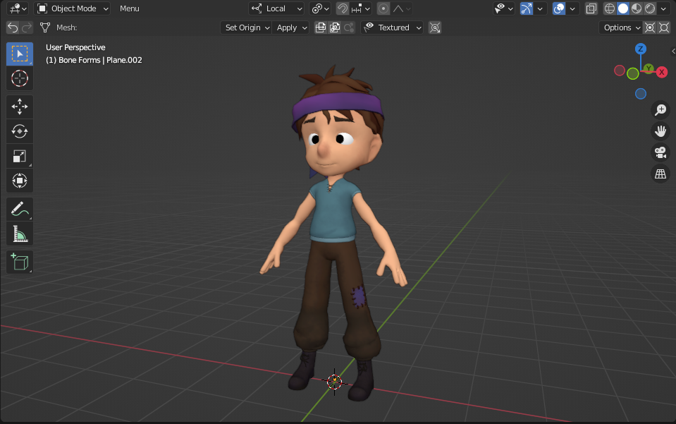
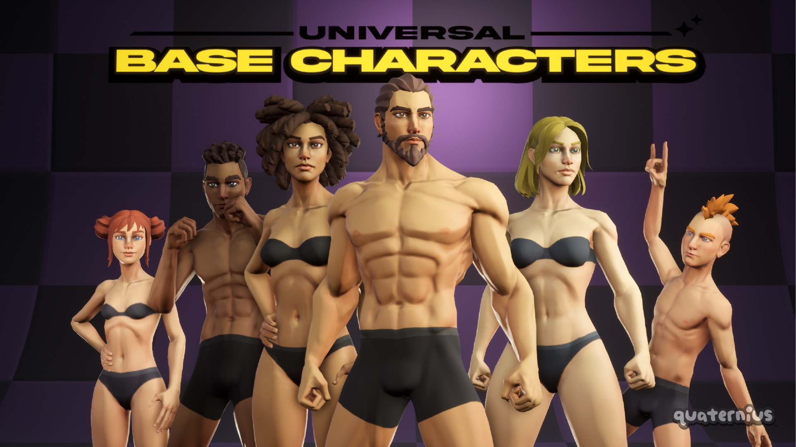

Boy (Scott)
Mish7913 / 3DMish
CC-BY-4.0 · Nguồn phát hành
Best free child-boy fit among directly viewed and inspected candidates; cute silhouette, but visible faceting/hair points and dated shading are not cinematic9/10
RECOMMEND_OWNER_VISUAL_REVIEW_FIRST
Spring v1
Blender Foundation / Blender Studio
CC-BY-4.0 · Nguồn phát hành
Actual child design and film-quality reference; original is a girl, requires intentional face/hair/outfit redesign for BUM, not color/scale change
SECONDARY_CHILD_ART_REFERENCE_CONDITIONAL
Storm v1
Blender Foundation / Blender Studio; rigging Demeter Dzadik and Rik Schutte
CC-BY-4.0 · Nguồn phát hành
Published youth-boy design is more relevant than adult Snow; sophisticated facial workflow is promising, but appearance not owner-approved and no local mesh audit
PROMISING_BUT_ACCESS_VERSION_AND_COST_GATED

Universal Base Characters — Teen variants (Standard)
Quaternius
CC0-1.0 · Nguồn phát hành
Viewed publisher preview is substantially more mature/angular than BUM target, including Teen faces; do not shrink/recolor adult variants as BUM
NOT_RECOMMENDED_FOR_FINAL_BUM_ART_TECHNICAL_FALLBACK_ONLY
5góc GLB thật, WebKit WPE/Linux; không phải iPhone. Scott:23.701tris,8primitives,3.447.428bytes nhưng370joints và skin4influences bị giới hạn khi xuất. Chỉ static probe, chưa chứng nhận facial/animation. Ảnh nguồn Mish7913 và Quaternius được ghi công trong hồ sơ; hìnhStudio chỉ dẫn link do không tải được.
Gói chỉ chứa nghiên cứu/ảnh/audit/code khảo sát, không đóng gói raw model donor hoặc thay runtime. Spring/Storm chưa có binary; số chưa đo đểnull. PR#2Draft, main/Pages/Supabase và ba nhân vật khác không đổi.